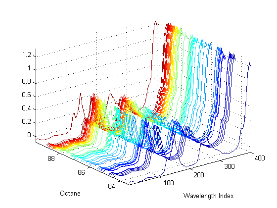
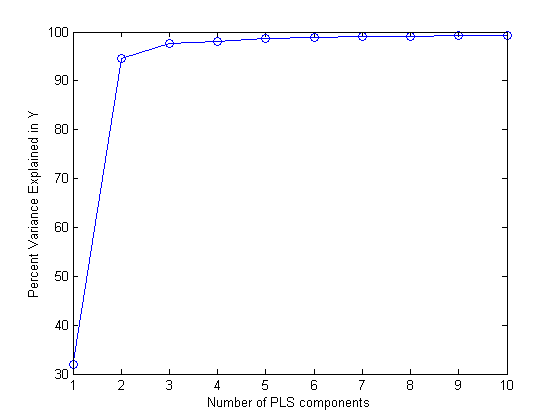
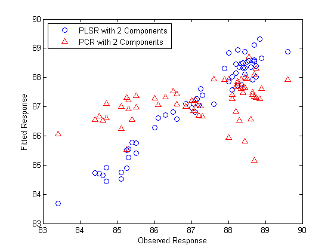
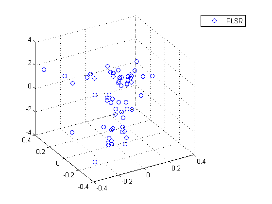
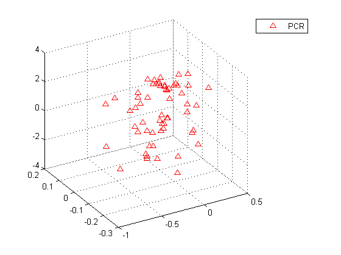
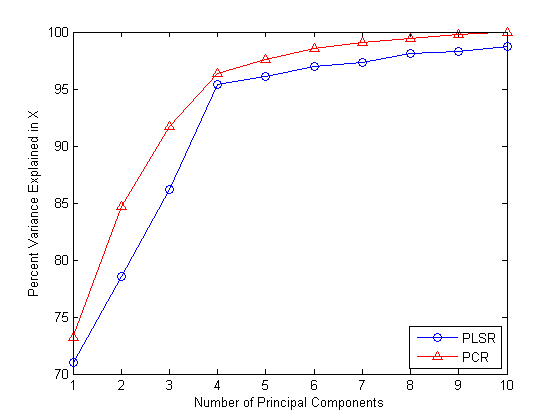
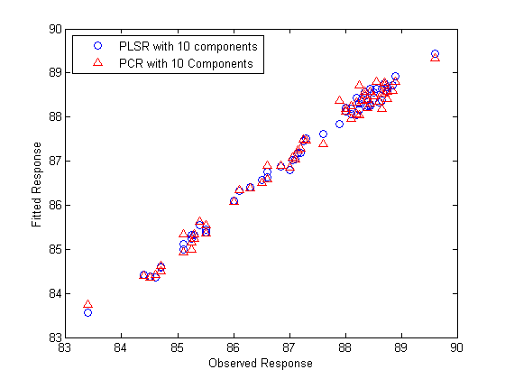
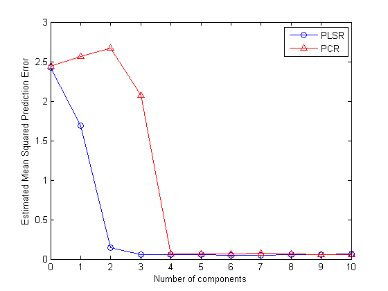
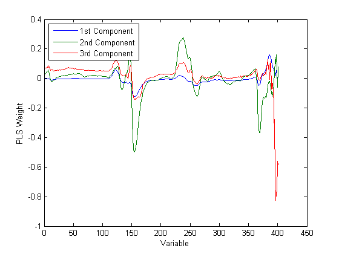
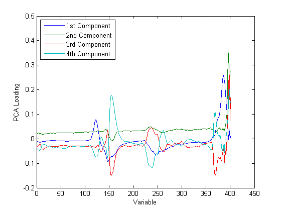

Partial Least Squares Regression and Principal Components Regression
Partial Least Squares Regression (PLSR) and Principal Components Regression (PCR) are both methods to model a response variable when there are a large number of predictor variables, and those predictors are highly correlated or even collinear. Both methods construct new predictor variables, known as components, as linear combinations of the original predictor variables, but they construct those components in different ways. PCR creates components to explain the observed variability in the predictor variables, without considering the response variable at all. On the other hand, PLSR does take the response variable into account, and therefore often leads to models that are able to fit the response variable with fewer components. Whether or not that ultimately translates into a more parsimonious model, in terms of its practical use, depends on the context.
This demo illustrates the difference in how the two methods construct components by applying both methods to the same data set, using functions in the Statistics Toolbox™.
Contents
Loading the Data
Load a data set comprising spectral intensities of 60 samples of gasoline at 401 wavelengths, and their octane ratings. These data are described in Kalivas, John H., "Two Data Sets of Near Infrared Spectra," Chemometrics and Intelligent Laboratory Systems, v.37 (1997) pp.255-259.
load spectra whos NIR octane
Name Size Bytes Class Attributes NIR 60x401 192480 double octane 60x1 480 double
[dummy,h] = sort(octane); oldorder = get(gcf,'DefaultAxesColorOrder'); set(gcf,'DefaultAxesColorOrder',jet(60)); plot3(repmat(1:401,60,1)',repmat(octane(h),1,401)',NIR(h,:)'); set(gcf,'DefaultAxesColorOrder',oldorder); xlabel('Wavelength Index'); ylabel('Octane'); axis('tight'); grid on
Fitting the Data with Two Components
Use the plsregress function to fit a PLSR model with ten PLS components and one response.
X = NIR; y = octane; [n,p] = size(X); [Xloadings,Yloadings,Xscores,Yscores,betaPLS10,PLSPctVar] = plsregress(X,y,10);
Ten components may be more than will be needed to adequately fit the data, but diagnostics from this fit can be used to make a choice of a simpler model with fewer components. For example, one quick way to choose the number of components is to plot the percent of variance explained in the response variable as a function of the number of components.
plot(1:10,cumsum(100*PLSPctVar(2,:)),'-bo'); xlabel('Number of PLS components'); ylabel('Percent Variance Explained in Y');
In practice, more care would probably be advisable in choosing the number of components. Cross-validation, for example, is a widely-used method that will be illustrated later in this demo. For now, the above plot suggests that PLSR with two components explains most of the variance in the observed y. Compute the fitted response values for the two-component model.
[Xloadings,Yloadings,Xscores,Yscores,betaPLS] = plsregress(X,y,2); yfitPLS = [ones(n,1) X]*betaPLS;
Next, fit a PCR model with two principal components. The first step is to perform Principal Components Analysis on X, using the princomp function, and retaining two principal components. PCR is then just a linear regression of the response variable on those two components. It often makes sense to normalize each variable first by its standard deviation when the variables have very different amounts of variability, however, that is not done here.
[PCALoadings,PCAScores,PCAVar] = princomp(X); betaPCR = regress(y-mean(y), PCAScores(:,1:2));
To make the PCR results easier to interpret in terms of the original spectral data, transform to regression coefficients for the original, uncentered variables.
betaPCR = PCALoadings(:,1:2)*betaPCR; betaPCR = [mean(y) - mean(X)*betaPCR; betaPCR]; yfitPCR = [ones(n,1) X]*betaPCR;
Plot fitted vs. observed response for the PLSR and PCR fits.
plot(y,yfitPLS,'bo',y,yfitPCR,'r^'); xlabel('Observed Response'); ylabel('Fitted Response'); legend({'PLSR with 2 Components' 'PCR with 2 Components'},'location','NW');
In a sense, the comparison in the plot above is not a fair one -- the number of components (two) was chosen by looking at how well a two-component PLSR model predicted the response, and there's no reason why the PCR model should be restricted to that same number of components. With the same number of components, however, PLSR does a much better job at fitting y. In fact, looking at the horizontal scatter of fitted values in the plot above, PCR with two components is hardly better than using a constant model. The r-squared values from the two regressions confirm that.
TSS = sum((y-mean(y)).^2); RSS_PLS = sum((y-yfitPLS).^2); rsquaredPLS = 1 - RSS_PLS/TSS
rsquaredPLS =
0.9466
RSS_PCR = sum((y-yfitPCR).^2); rsquaredPCR = 1 - RSS_PCR/TSS
rsquaredPCR =
0.1962
Another way to compare the predictive power of the two models is to plot the response variable against the two predictors in both cases.
plot3(Xscores(:,1),Xscores(:,2),y-mean(y),'bo'); legend('PLSR'); grid on; view(-30,30);
It's a little hard to see without being able to interactively rotate the figure, but the PLSR plot above shows points closely scattered about a plane. On the other hand, the PCR plot below shows a cloud of points with little indication of a linear relationship.
plot3(PCAScores(:,1),PCAScores(:,2),y-mean(y),'r^'); legend('PCR'); grid on; view(-30,30);
Notice that while the two PLS components are much better predictors of the observed y, the following figure demonstrates that they explain somewhat less variance in the observed X than the first two principal components used in the PCR.
plot(1:10,100*cumsum(PLSPctVar(1,:)),'b-o',1:10,100*cumsum(PCAVar(1:10))/sum(PCAVar(1:10)),'r-^'); xlabel('Number of Principal Components'); ylabel('Percent Variance Explained in X'); legend({'PLSR' 'PCR'},'location','SE');
The fact that the PCR curve is uniformly higher suggests why PCR with two components does such a poor job, relative to PLSR, in fitting y. PCR constructs components to best explain X, and as a result, those first two components ignore the information in the data that is important in fitting the observed y.
Fitting with More Components
As more components are added in PCR, it will necessarily do a better job of fitting the original data y, simply because at some point most of the important predictive information in X will be present in the principal components. For example, the following figure demonstrates that the difference in residuals for the two methods is much less dramatic when using ten components than it was for two components.
yfitPLS10 = [ones(n,1) X]*betaPLS10; betaPCR10 = regress(y-mean(y), PCAScores(:,1:10)); betaPCR10 = PCALoadings(:,1:10)*betaPCR10; betaPCR10 = [mean(y) - mean(X)*betaPCR10; betaPCR10]; yfitPCR10 = [ones(n,1) X]*betaPCR10; plot(y,yfitPLS10,'bo',y,yfitPCR10,'r^'); xlabel('Observed Response'); ylabel('Fitted Response'); legend({'PLSR with 10 components' 'PCR with 10 Components'},'location','NW');
Both models fit y fairly accurately, although PLSR still makes a slightly more accurate fit. However, ten components is still an arbitrarily-chosen number for either model.
Choosing the Number of Components with Cross-Validation
It's often useful to choose the number of components to minimize the expected error when predicting the response from future observations on the predictor variables. Simply using a large number of components will do a good job in fitting the current observed data, but is a strategy that leads to overfitting. Fitting the current data too well results in a model that does not generalize well to other data, and gives an overly-optimistic estimate of the expected error.
Cross-validation is a more statistically sound method for choosing the number of components in either PLSR or PCR. It avoids overfitting data by not reusing the same data to both fit a model and to estimate prediction error. Thus, the estimate of prediction error is not optimistically biased downwards.
plsregress has an option to estimate the mean squared prediction error (MSEP) by cross-validation, in this case using 10-fold C-V.
[Xl,Yl,Xs,Ys,beta,pctVar,PLSmsep] = plsregress(X,y,10,'CV',10);
For PCR, crossval combined with a simple function to compute the sum of squared errors for PCR, can estimate the MSEP, again using 10-fold cross-validation.
PCRmsep = sum(crossval(@pcrsse,X,y,'KFold',10),1) / n;
The MSEP curve for PLSR indicates that two or three components does about as good a job as possible. On the other hand, PCR needs four components to get the same prediction accuracy.
plot(0:10,PLSmsep(2,:),'b-o',0:10,PCRmsep,'r-^'); xlabel('Number of components'); ylabel('Estimated Mean Squared Prediction Error'); legend({'PLSR' 'PCR'},'location','NE');
In fact, the second component in PCR increases the prediction error of the model, suggesting that the combination of predictor variables contained in that component is not strongly correlated with y. Again, that's because PCR constructs components to explain variation in X, not y.
Model Parsimony
So if PCR requires four components to get the same prediction accuracy as PLSR with three components, is the PLSR model more parsimonious? That depends on what aspect of the model you consider.
The PLS weights are the linear combinations of the original variables that define the PLS components, i.e., they describe how strongly each component in the PLSR depends on the original variables, and in what direction.
[Xl,Yl,Xs,Ys,beta,pctVar,mse,stats] = plsregress(X,y,3); plot(1:401,stats.W,'-'); xlabel('Variable'); ylabel('PLS Weight'); legend({'1st Component' '2nd Component' '3rd Component'},'location','NW');
Similarly, the PCA loadings describe how strongly each component in the PCR depends on the original variables.
plot(1:401,PCALoadings(:,1:4),'-'); xlabel('Variable'); ylabel('PCA Loading'); legend({'1st Component' '2nd Component' '3rd Component' '4th Component'},'location','NW');
For either PLSR or PCR, it may be that each component can be given a physically meaningful interpretation by inspecting which variables it weights most heavily. For instance, with these spectral data it may be possible to interpret intensity peaks in terms of compounds present in the gasoline, and then to observe that weights for a particular component pick out a small number of those compounds. From that perspective, fewer components are simpler to interpret, and because PLSR often requires fewer components to predict the response adequately, it leads to more parsimonious models.
On the other hand, both PLSR and PCR result in one regression coefficient for each of the original predictor variables, plus an intercept. In that sense, neither is more parsimonious, because regardless of how many components are used, both models depend on all predictors. More concretely, for these data, both models need 401 spectral intensity values in order to make a prediction.
However, the ultimate goal may to reduce the original set of variables to a smaller subset still able to predict the response accurately. For example, it may be possible to use the PLS weights or the PCA loadings to select only those variables that contribute most to each component. As demonstrated earlier, some components from a PCR model fit may serve primarily to describe the variation in the predictor variables, and may include large weights for variables that are not strongly correlated with the response. Thus, PCR can lead to retaining variables that are unnecessary for prediction.
For the data used in this demo, the difference in the number of components needed by PLSR and PCR for accurate prediction is not great, and the PLS weights and PCA loadings seem to pick out the same variables. That may not be true for other data.